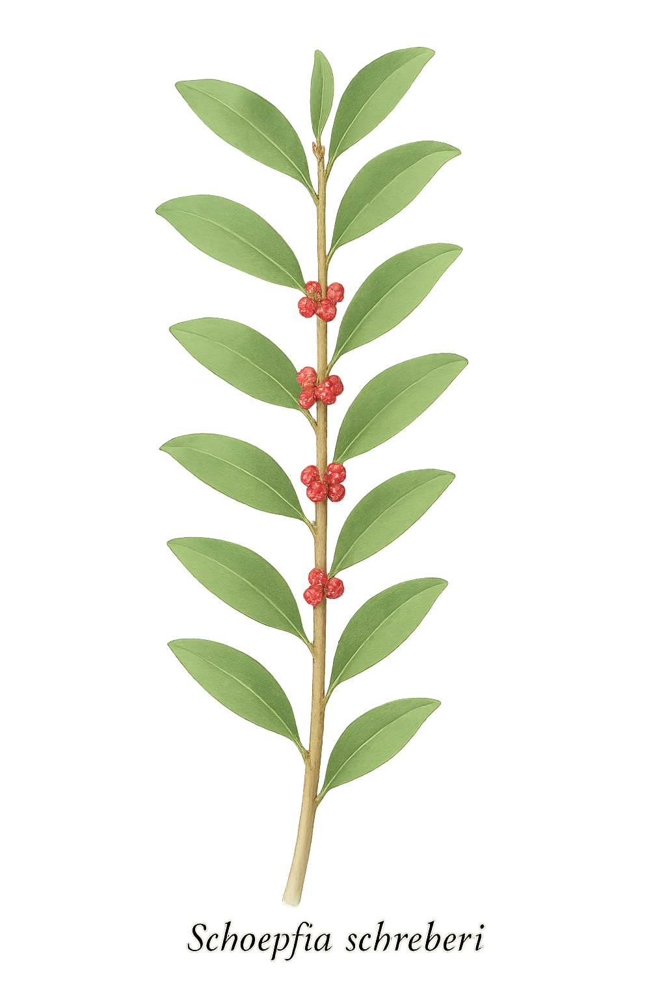

Schoepfiaceae
Schoepfiaceae is a small family of woody shrubs, small trees, and some herbaceous perennials belonging to the order Santalales. Its members are hemiparasites, attaching to the roots of host plants. Characterized by alternate, simple leaves, small inconspicuous flowers with an inferior ovary, and fleshy drupe fruits, the family is found primarily in the tropical and subtropical regions of the Americas and Asia.
Overview
Schoepfiaceae is a family positioned within the core eudicot order Santalales, an order renowned for its high prevalence of parasitic plants, including mistletoes. The family comprises 3 genera: Schoepfia (shrubs and small trees), and the primarily herbaceous South American genera Arjona and Quinchamalium, totaling around 50-60 species. Previously, these genera were often included within the broader families Olacaceae or Santalaceae, but molecular data now strongly supports their recognition as a distinct family, Schoepfiaceae.
A defining biological feature of the family is its hemiparasitic nature. Plants possess chlorophyll and photosynthesize but tap into the roots of nearby host plants using specialized structures called haustoria to obtain water and mineral nutrients. This parasitic connection occurs underground and is not typically visible without excavation. The family has a broad distribution across tropical and subtropical regions, primarily in the Americas (from the southeastern US south to Patagonia) and Asia.
Economically, the family is of minor importance, although some species might be used locally or encountered as minor components of forest ecosystems. Their phylogenetic position within Santalales makes them significant for understanding the evolution of parasitism in plants.
Quick Facts
- Scientific Name: Schoepfiaceae
- Common Name: (None widely accepted)
- Number of Genera: 3 (Schoepfia, Arjona, Quinchamalium)
- Number of Species: Approximately 50-60
- Distribution: Tropical/Subtropical Americas and Asia
- Evolutionary Group: Eudicots - Core Eudicots - Santalales
Key Characteristics
Growth Form and Habit
Members are typically shrubs or small trees (Schoepfia) or herbaceous perennials/subshrubs (Arjona, Quinchamalium). Some Schoepfia species can appear somewhat vine-like or scandent. Critically, all are hemiparasites, forming connections (haustoria) to the roots of host plants underground.
Leaves
Leaves are arranged alternately along the stem (rarely opposite). They are simple, usually with an entire (smooth) margin, and lack stipules (exstipulate). Leaf shape and texture vary, from broad leaves in some Schoepfia to linear or scale-like leaves in some herbaceous species.
Inflorescence
Flowers are borne in axillary inflorescences, typically short cymes, fascicles (clusters), or racemes, or sometimes flowers are solitary. Inflorescences are generally few-flowered and inconspicuous.
Flowers
Flowers are generally small, radially symmetrical (actinomorphic), and can be bisexual or unisexual (plants then dioecious or polygamous). Key floral features include:
- Perianth Structure: Often complex to interpret, but typically features an outer whorl (calyx or calyculus) fused to the ovary, and an inner whorl of fused petals (sympetalous corolla) forming a tube, bell, or urn shape, usually with 4 or 5 lobes.
- Ovary Position: The ovary is distinctly inferior (located below the attachment of the corolla and stamens), or sometimes semi-inferior.
- Androecium: Stamens are present in the same number as the corolla lobes (usually 4 or 5) and alternate with them. They are attached to the corolla tube (epipetalous).
- Gynoecium: The pistil is composed of 3 fused carpels (syncarpous). The inferior ovary is typically unilocular (one chamber) towards the apex, containing 1-3 ovules suspended from a free-central placenta. A single style terminates in a capitate or slightly lobed stigma.
- Nectar Disc: An epigynous nectar disc (located atop the ovary) is usually present.
Fruits and Seeds
The fruit is consistently a fleshy drupe (a stone fruit, like a cherry or plum), often crowned by the persistent remnants of the calyx or perianth lobes. The drupe contains a single seed.
Chemical Characteristics
Plants in Santalales, including Schoepfiaceae, may contain specific compounds like polyacetylenes. However, the most defining biological characteristic is their parasitic physiology rather than a unique chemical profile readily detectable in the field.
Field Identification
Identifying Schoepfiaceae in the field requires careful observation of habit, leaves, flowers, and fruit, keeping in mind their parasitic nature (though this is often hidden):
Primary Identification Features
- Habit: Look for shrubs, small trees, or sometimes herbaceous perennials (in South America). Remember they are root hemiparasites, though this isn't visible above ground.
- Leaves: Check for alternate, simple, entire-margined, exstipulate leaves.
- Flowers: Identify the small, often clustered, radially symmetrical flowers. Look for a fused, tubular or bell-shaped corolla (usually 4-5 lobes) and an inferior ovary (corolla and stamens attach above the ovary).
- Stamens: Stamens usually equal in number to corolla lobes (4 or 5).
- Fruit: The fruit is a fleshy drupe, often with persistent floral parts at the apex.
- Distribution: Primarily tropical/subtropical Americas and Asia.
Secondary Identification Features
- Flower Position: Flowers typically in axillary clusters or short racemes.
- Ovary Details: Inferior ovary composed of 3 carpels (difficult to see without dissection).
- Nectar Disc: Presence of a disc atop the ovary.
Seasonal Identification Tips
- Year-round: Woody structure (in Schoepfia) and alternate, simple, exstipulate leaves are constant features.
- Flowering/Fruiting: Occurs seasonally, varying by region. The small flowers can be inconspicuous, while the drupes may be more noticeable when mature (often reddish or orange).
Common Confusion Points
- Other Santalales families (Olacaceae, Opiliaceae, Erythropalaceae): These related families also contain root parasites with often alternate simple leaves. Distinctions lie in floral details: Opiliaceae often have tiny flowers lacking a distinct corolla in dense spikes; Olacaceae (sensu lato) is diverse but often differs in ovary position (sometimes superior) or petal fusion; Erythropalaceae are often lianas with superior ovaries. The combination of inferior ovary and distinct tubular corolla is key for Schoepfiaceae.
- Non-parasitic shrubs/trees: Many unrelated families have members with alternate simple leaves (e.g., some Celastraceae, Rhamnaceae, Ebenaceae). Schoepfiaceae can be distinguished by the combination of an inferior ovary, specific floral formula (usually 4-5 fused petals, 4-5 stamens), and drupe fruit crowned by floral remnants.
Field Guide Quick Reference
Look For:
- Shrub/small tree (or herb in SA)
- Root hemiparasite (assumed)
- Leaves alternate, simple, exstipulate
- Small flowers, often clustered
- Corolla tubular/bell-shaped (4-5 lobes)
- Ovary inferior
- Fruit a drupe (often crowned)
Key Distinctions:
- Ovary inferior (vs. superior in many look-alikes)
- Fruit a drupe (vs. capsule, berry, etc.)
- Corolla distinct (vs. absent/reduced in Opiliaceae)
- Habit (vs. aerial parasites like mistletoes)
Notable Examples
The family includes both woody and herbaceous genera:

Schoepfia schreberi
(No common English name)
A widespread species occurring as a shrub or small tree in Florida, the West Indies, Mexico, Central America, and South America. It has alternate, ovate to elliptic leaves and produces small, yellowish-green to reddish, tubular or bell-shaped flowers in short axillary clusters. The fruit is an ellipsoid, reddish-orange drupe.

Arjona patagonica
(No common English name)
Representing the herbaceous side of the family, this species is a low-growing perennial or subshrub found in the arid regions of Patagonia, southern South America. It has narrow, linear or lance-shaped leaves and is known to parasitize grasses. Flowers are yellowish, often clustered and subtended by bracts, followed by small drupes.

Quinchamalium chilense
Quinchamalí
Another herbaceous perennial or subshrub genus from South America, often found in Andean regions from Colombia to Chile and Argentina. Species like Q. chilense typically have linear leaves and produce terminal heads or dense cymes of small, often yellow or orange tubular flowers, subtended by prominent bracts. The fruit is a drupe.
Phylogeny and Classification
Schoepfiaceae belongs to the order Santalales, a major lineage within the core eudicots. This order is particularly notable for the repeated evolution of parasitism, ranging from root hemiparasitism (as seen in Schoepfiaceae, Opiliaceae, Santalaceae sensu lato) to aerial stem parasitism (mistletoes in Loranthaceae, Santalaceae/Viscaceae, Misodendraceae) and even holoparasitism (Balanophoraceae).
Molecular studies place Schoepfiaceae firmly within Santalales, resolving its position separate from the broadly defined Olacaceae or Santalaceae where its genera were sometimes previously placed. Current phylogenetic hypotheses often suggest a close relationship between Schoepfiaceae, the aerial parasitic families Loranthaceae (showy mistletoes) and Misodendraceae (southern beech mistletoes), indicating that the root-parasitic habit of Schoepfiaceae might represent an ancestral state relative to the evolution of aerial parasitism in its closest relatives.
Position in Plant Phylogeny
- Kingdom: Plantae
- Clade: Angiosperms (Flowering plants)
- Clade: Eudicots
- Clade: Core Eudicots
- Order: Santalales
- Family: Schoepfiaceae
Evolutionary Significance
The Schoepfiaceae family is significant for:
- Understanding Parasitism Evolution: Its phylogenetic position, potentially close to aerial parasitic lineages like Loranthaceae, makes it key to understanding the evolutionary transitions between root and stem parasitism within Santalales.
- Bridging Morphologies: Combines features like root parasitism with floral structures (e.g., inferior ovary, sympetalous corolla) that differ from some other basal Santalales lineages.
- Habit Diversity: Includes both woody tree/shrub forms (Schoepfia) and herbaceous forms (Arjona, Quinchamalium), showing diversification within the parasitic lifestyle.
- Biogeography: Its distribution across the Americas and Asia provides clues about the historical spread and diversification of the Santalales order.